Downloading the drivers online
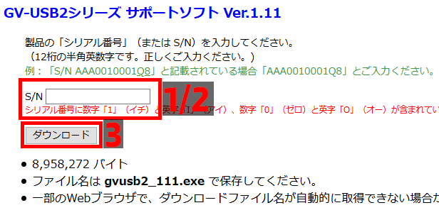
- You will see a text box to the right of "S/N", this page asks you for your serial number of your device in order to download the drivers. The serial number should be printed on your GV-USB2.
- Enter your Serial Number in the text field
- Click the "ダウンロード" ("Download") button to download the driver "gvusb2_111.exe" and run it
- A new folder on your desktop will appear called "gvusb2_111", run "GVUSB2.exe" in that folder.
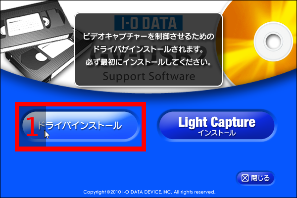
- Click the first blue button, marked with a 1
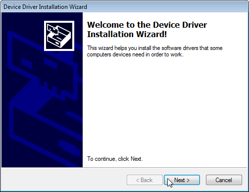
- Click "Next" and wait a little bit, and the drivers should be installed
Driver Install
- 1. Once we've loaded the CD (Auto-run or opened GVUSB2.exe manually), click the right of the 2 large blue buttons
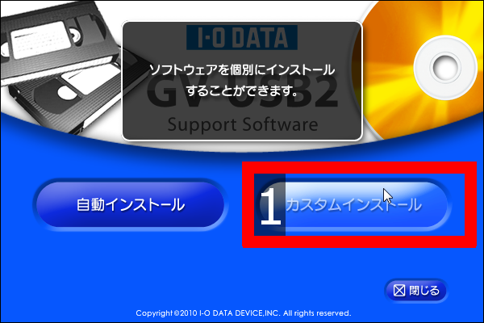
- 2. Now click the first blue button marked with a 1
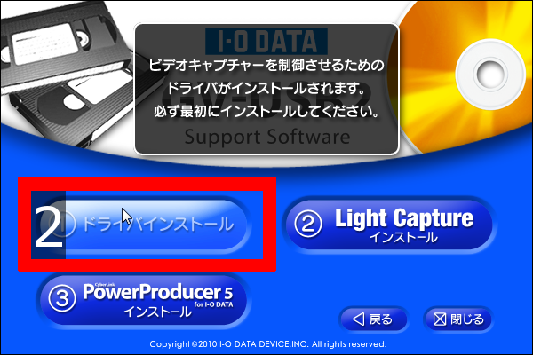
- 3. Click next a few times to get through the driver installation and you're done with this step!
LAGS Codec Installation
Assuming you're going to record directly with AmaRecTV you're going to want LAGS installed so your recordings won't have the "AMV" watermark.
LAGS is a lossless codec which means file sizes are a fairly large, make sure you have a lot of free storage space!
If you're not planning on recording you can skip this step, but it's probably a good idea to do just in-case you ever want to.
- Download the latest Lagarith Lossless Codec. (Direct Link)
- Run "LagarithSetup_1327.exe" and follow the instructions (Just click next).
- LAGS should be installed, you're done with this step.
AmaRecTV Setup
The GV-USB2 can be used directly with streaming software such as OBS, XSplit, and many Video editing applications (such as VirtualDub), however I recommend using AmaRecTV's Live output for the ability to simultaneously stream and record lossless video via AmaRecTV.
Make sure not to download Version 4.XX as it currently only works on Windows 8 and has different menus than this guide.
- Unzip the folder to location of your choosing.
- Run "live_setup300.exe" from the folder you unzipped.
Text May be Garbled if you're not using the Japanese Locale, but should install just fine. Just press the selected button (with the > at the end of it) a few times.
Run AmaRecTV (AmaRecTV in the same folder you unzipped)
You should be greeted with a dialog asking you to change your settings.
If not, click the first button in the top left corner or right click in the preview area and click "Config"
"General" Tab
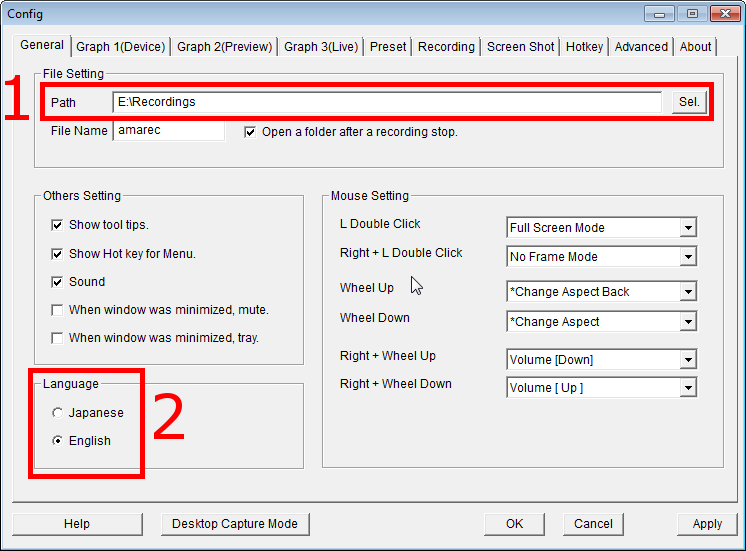
- Set "Path" to where you want your recordings to be saved to
- Make sure "Language" is set to "English"
"Device" Tab
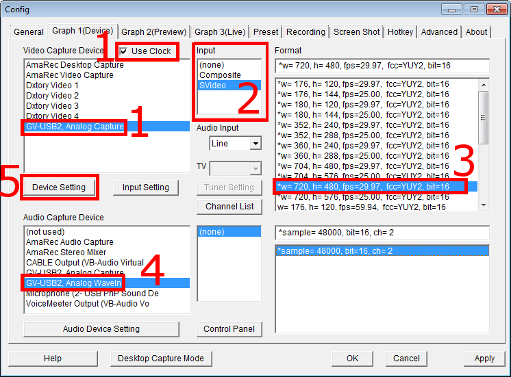
- Set "Video Capture Device" to "GV-USB2, Analog Capture" and make sure "Use Clock" is checked
- Set "Input" to either "Composite" or "S-Video" (Depending on what input you're using)
- Set "Format" to "*w= 720, h= 480, fps=29.97, fcc=YUY2, bit=16" (We're going to be setting the aspect ratio later and in post production for recordings)
- Set "Audio Capture Device" to "GV-USB2, Analog WaveIn"
- Enter "Device Setting" and ensure "VID INPUT" is the same input as you set in AmaRec
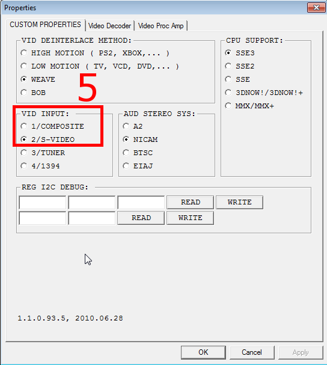
"Graph 2(Preview)" Tab
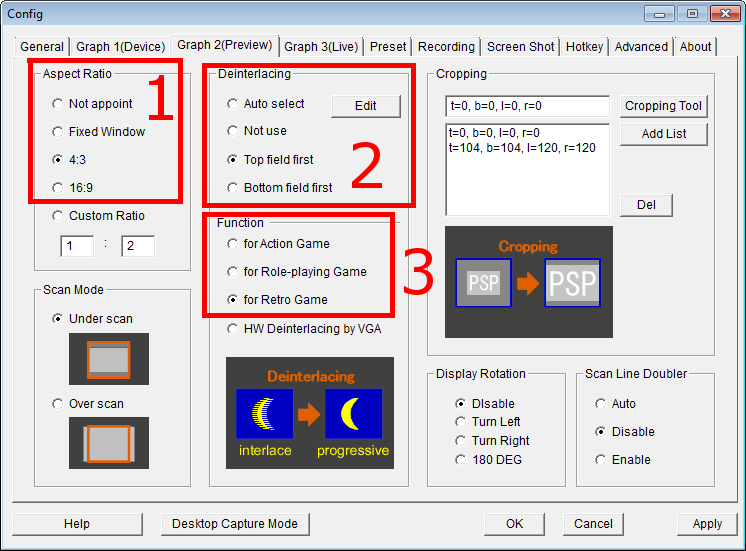
- Set "Aspect Ratio" to 4:3 for most SD games (PS2/GCN and below are generally 4:3) or 16:9 if playing a newer game or playing a game with a 16:9 option enabled
- Set "Deinterlacing" to "Top field first"
- Set "Function" to "for Retro Game" for old (240p) games or "for Role-playing Game" for most newer/hi-res games (480i+)
"Graph 3(Live)" tab
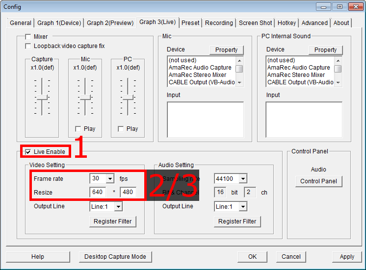
- Make sure "Live Enable" is checked
- Set "Framerate" to "30fps" for 30fps games, or "60fps" for 60fps games
- Set "Resize" to "640 * 480" for 4:3 games, or "720 * 480" for 16:9 games
"Recording" tab
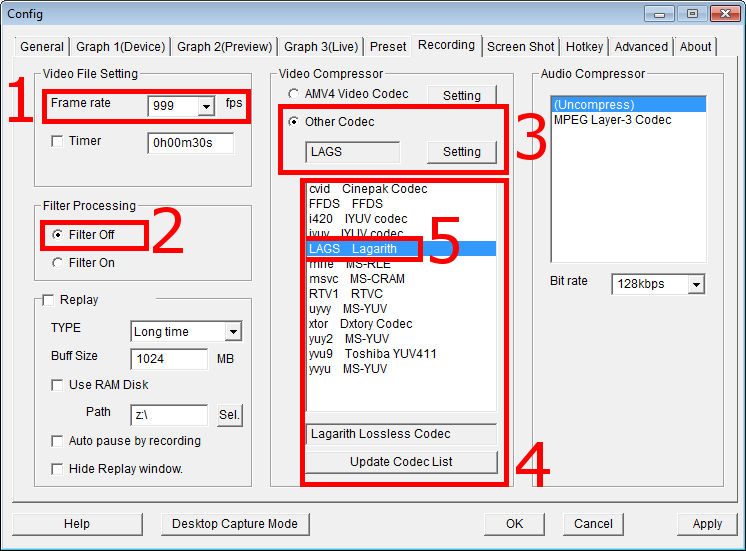
- Set "Framerate" to either 999 or 30 (Should result in 29.97fps recordings regardless)
- For "Filter Processing" you have two choices:
- "Filter Off" results in recordings with the least amount of extra video processing. (No deinterlacing/Resizing/Cropping) This is useful if you plan on doing a lot of post-processing; deinterlacing quality can be better in post-production and may be able to use methods not available in AmaRecTV.
- "Filter On" results in recordings after processing by AmaRecTV, the video will look approximately the same as the AmaRec preview window
(A guide on encoding/some post processing recordings may come sometime in the future)
- Set "Video Compressor" to "Other Codec"
- Click "Update Codec List"
- Select "LAGS Lagarith" from the list above
"Hotkey" tab
Personally, I disable hot-keys so I don't accidentally stop a recording.
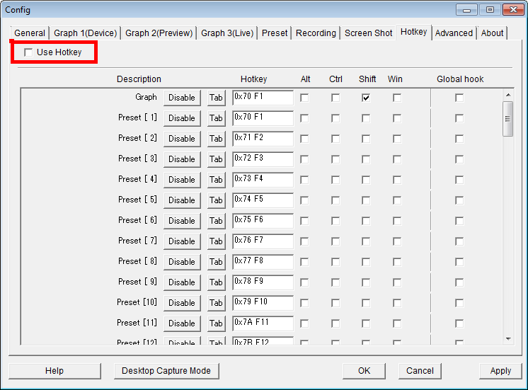
- Disable "Use Hotkey" check-box
- You can finally exit the config by clicking "OK"
AmaRec has a lot of settings, but you should only have to configure it once thankfully.
Using AmaRec Live with streaming software
While you can, in most cases, use window capture the AmaRec preview there is an alternative to windows/screen capturing.
By using AmaRec's Live output you gain the ability to minimize the AmaRec window, which can be useful especially on single monitor setups.
Note that AmaRec's live output only works with 32Bit software, to use it with OBS you need to be running the 32bit version.
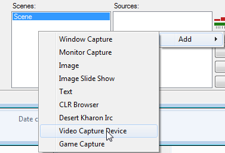
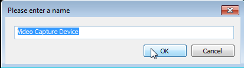
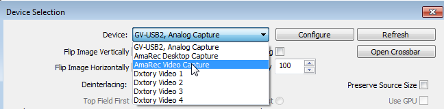
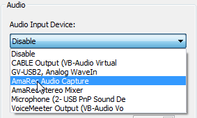
- Create a Video Capture Source ("Video Capture Device" in OBS)
- Select "AmaRec Video Capture"
- Select "AmaRec Audio Capture" as the audio device